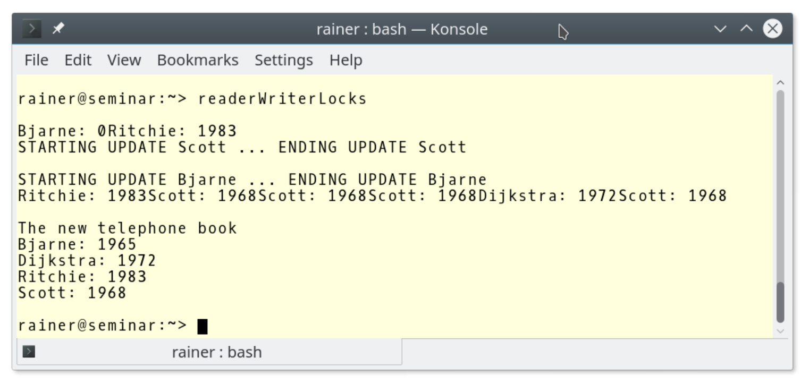

#共享数据
为了更清楚地说明这一点，就需要考虑共享数据的同步问题，因为数据竞争很容易在共享数据上发生。如果并发地对数据进行非同步读写访问，则会产生未定义行为。
验证并发、未同步的读写操作的最简单方法，就是向std::cout写入一些内容。
让我们来看一下，使用不同步的方式进行std::cout打印输出。
// coutUnsynchronised.cpp
#include <chrono>
#include <iostream>
#include <thread>
class Worker {
public:
Worker(std::string n) :name(n) {}
void operator()() {
for (int i = 1; i <= 3; ++i) {
// begin work
std::this_thread::sleep_for(std::chrono::microseconds(200));
// end work
std::cout << name << ": " << "Work " << i << " done !!!" << std::endl;
}
}
private:
std::string name;
};
int main() {
std::cout << std::endl;
std::cout << "Boss: Let's start working.\n\n";
std::thread herb = std::thread(Worker("Herb"));
std::thread andrei = std::thread(Worker(" Andrei"));
std::thread scott = std::thread(Worker(" Scott"));
std::thread bjarne = std::thread(Worker(" Bjarne"));
std::thread bart = std::thread(Worker(" Bart"));
std::thread jenne = std::thread(Worker(" Jenne"));
herb.join();
andrei.join();
scott.join();
bjarne.join();
bart.join();
jenne.join();
std::cout << "\n" << "Boss: Let's go home." << std::endl;
std::cout << std::endl;
}
该程序描述了一个工作流程：老板有六个员工(第29 - 34行)，每个员工必须处理3个工作包，处理每个工作包需要200毫秒(第13行)。当员工完成了他的所有工作包时，他向老板报告(第15行)。当老板收到所有员工的报告，老板就会把员工们送回家(第43行)。
这么简单的工作流程，输出却如此混乱。

让输出变清晰的最简单解决方法，就是使用互斥量。
##互斥量
Mutex是互斥(mutual exclusion)的意思，它确保在任何时候只有一个线程可以访问临界区。
通过使用互斥量，工作流程的混乱变的和谐许多。
// coutSynchronised.cpp
#include <chrono>
#include <iostream>
#include <mutex>
#include <thread>
std::mutex coutMutex;
class Worker {
public:
Worker(std::string n) :name(n) {}
void operator()() {
for (int i = 1; i <= 3; ++i) {
// begin work
std::this_thread::sleep_for(std::chrono::microseconds(200));
// end work
coutMutex.lock();
std::cout << name << ": " << "Work " << i << " done !!!" << std::endl;
coutMutex.unlock();
}
}
private:
std::string name;
};
int main() {
std::cout << std::endl;
std::cout << "Boss: Let's start working.\n\n";
std::thread herb = std::thread(Worker("Herb"));
std::thread andrei = std::thread(Worker(" Andrei"));
std::thread scott = std::thread(Worker(" Scott"));
std::thread bjarne = std::thread(Worker(" Bjarne"));
std::thread bart = std::thread(Worker(" Bart"));
std::thread jenne = std::thread(Worker(" Jenne"));
herb.join();
andrei.join();
scott.join();
bjarne.join();
bart.join();
jenne.join();
std::cout << "\n" << "Boss: Let's go home." << std::endl;
std::cout << std::endl;
}
第8行中coutMutex保护了std::cout，第19行中的lock()和第21行中的unlock()调用，确保工作人员不会同时进行报告。

std:: cout是线程安全的
C++11标准中，
std::cout不需要额外的保护，每个字符都是原子式书写的。可能会有更多类似示例中的输出语句交织在一起的情况，但这些只是视觉问题，而程序则是定义良好的。所有全局流对象都是线程安全的，并且插入和提取全局流对象(std::cout、std::cin、std::cerr和std::clog)也都是线程安全的。更正式地说：写入
std::cout并不是数据竞争，而是一个竞争条件。这意味着输出内容的情况，完全取决于交错运行的线程。
C++11有4个不同的互斥量，可以递归地、暂时地锁定，并且不受时间限制。
| 成员函数 | mutex | recursive_mutex | timed_mutex | recursive_timed_mutex |
|---|---|---|---|---|
| m.lock | yes | yes | yes | yes |
| m.try_lock | yes | yes | yes | yes |
| m.try_lock_for | yes | yes | ||
| m.try_lock_until | yes | yes | ||
| m.unlock | yes | yes | yes | yes |
递归互斥量允许同一个线程多次锁定互斥锁。互斥量保持锁定状态，直到解锁次数与锁定次数相等。可以锁定互斥量的最大次数默认并未指定，当达到最大值时，会抛出std::system_error异常。
C++14中有std::shared_timed_mutex，C++17中有std::shared_mutex。std::shared_mutex和std::shared_timed_mutex非常相似，使用的锁可以是互斥或共享的。另外，使用std::shared_timed_mutex可以指定时间点或时间段进行锁定。
| 成员函数 | shared_timed_mutex | shared_mutex |
|---|---|---|
| m.lock | yes | yes |
| m.try_lock | yes | yes |
| m.try_lock_for | yes | |
| m.try_lock_until | yes | |
| m.unlock | yes | yes |
| m.lock_shared | yes | yes |
| m.try_lock_shared | yes | yes |
| m.try_lock_shared_for | yes | |
| m.try_lock_shared_until | yes | |
| m.unlock_shared | yes | yes |
std::shared_timed_mutex(std::shared_mutex)可以用来实现读写锁，也就可以使用std::shared_timed_mutex(std::shared_mutex)进行独占或共享锁定。如果将std::shared_timed_mutex(std::shared_mutex)放入std::lock_guard或std::unique_lock中，就可实现独占锁；如果将std::shared_timed_mutex(std::shared_lock)放入std::shared_lock中，就可实现共享锁。m.try_lock_for(relTime)和m.try_lock_shared_for(relTime)需要一个时间段；m.try_lock_until(absTime)和m.try_lock_shared_until(absTime)需要一个绝对的时间点。
m.try_lock(m.try_lock_shared)尝试锁定互斥量并立即返回。成功时，它返回true，否则返回false。相比之下，m.try_lock_for(m.try_lock_shared_for)和m.try_lock_until(m.try_lock_shared_until)也会尝试上锁，直到超时或完成锁定，这里应该使用稳定时钟来限制时间(稳定的时钟是不能调整的)。
不应该直接使用互斥量，应该将互斥量放入锁中，下面解释下原因。
互斥量的问题
互斥量的问题可以归结为一个：死锁。
死锁
两个或两个以上的个线程处于阻塞状态，并且每个线程在释放之前都要等待其他线程的释放。
结果就是程序完全静止。试图获取资源的线程，通常会永久的阻塞程序。形成这种困局很简单，有兴趣了解一下吗?
异常和未知代码
下面的代码段有很多问题。
std::mutex m;
m.lock();
sharedVariable = getVar();
m.unlock();
问题如下：
- 如果函数
getVar()抛出异常，则互斥量m不会被释放。 - 永远不要在持有锁的时候调用函数。因为
m不是递归互斥量，如果函数getVar试图锁定互斥量m，则程序具有未定义的行为。大多数情况下，未定义行为会导致死锁。 - 避免在持有锁时调用函数。可能这个函数来自一个库，但当这个函数发生改变，就有陷入僵局的可能。
程序需要的锁越多，程序的风险就越高(非线性)。
不同顺序锁定的互斥锁
下面是一个典型的死锁场景，死锁是按不同顺序进行锁定的。

线程1和线程2需要访问两个资源来完成它们的工作。当资源被两个单独的互斥体保护，并且以不同的顺序被请求(线程1:锁1，锁2;线程2:锁2，锁1)时，线程交错执行，线程1得到互斥锁1，然后线程2得到互斥锁2，从而程序进入停滞状态。每个线程都想获得另一个互斥锁，但需要另一个线程释放其需要的互斥锁。“死亡拥抱”这个形容，很好地描述了这种状态。
将这上图转换成代码。
// deadlock.cpp
#include <iostream>
#include <chrono>
#include <mutex>
#include <thread>
struct CriticalData {
std::mutex mut;
};
void deadLock(CriticalData& a, CriticalData& b) {
a.mut.lock();
std::cout << "get the first mutex" << std::endl;
std::this_thread::sleep_for(std::chrono::microseconds(1));
b.mut.lock();
std::cout << "get the second mutext" << std::endl;
// do something with a and b
a.mut.unlock();
b.mut.unlock();
}
int main() {
CriticalData c1;
CriticalData c2;
std::thread t1([&] {deadLock(c1, c2); });
std::thread t2([&] {deadLock(c2, c1); });
t1.join();
t2.join();
}
线程t1和t2调用死锁函数(第12 - 23行)，向函数传入了c1和c2(第27行和第28行)。由于需要保护c1和c2不受共享访问的影响，它们在内部各持有一个互斥量(为了保持本例简短，关键数据除了互斥量外没有其他函数或成员)。
第16行中，约1毫秒的短睡眠就足以产生死锁。

这时，只能按CTRL+C终止进程。
互斥量不能解决所有问题，但在很多情况下，锁可以帮助我们解决这些问题。
锁
锁使用RAII方式处理它们的资源。锁在构造函数中自动绑定互斥量，并在析构函数中释放互斥量，这大大降低了死锁的风险。
锁有四种不同的形式：std::lock_guard用于简单程序，std::unique_lock用于高级程序。从C++14开始就可以用std::shared_lock来实现读写锁了。C++17中，添加了std::scoped_lock，它可以在原子操作中锁定更多的互斥对象。
首先，来看简单程序。
std::lock_guard
std::mutex m;
m.lock();
sharedVariable = getVar();
m.unlock();
互斥量m可以确保对sharedVariable = getVar()的访问是有序的。有序指的是，每个线程按照某种顺序，依次访问临界区。代码很简单，但是容易出现死锁。如果临界区抛出异常或者忘记解锁互斥量，就会出现死锁。使用std::lock_guard，可以很优雅的解决问题：
{
std::mutex m,
std::lock_guard<std::mutex> lockGuard(m);
sharedVariable = getVar();
}
代码很简单，但是前后的花括号是什么呢？std::lock_guard的生存周期受其作用域的限制，作用域由花括号构成。生命周期在达到右花括号时结束，std::lock_guard析构函数被调用，并且互斥量被释放。这都是自动发生的，如果sharedVariable = getVar()中的getVar()抛出异常，释放过程也会自动发生。函数作用域和循环作用域，也会限制实例对象的生命周期。
std::scoped_lock
C++17中，添加了std::scoped_lock。与std::lock_guard非常相似，但可以原子地锁定任意数量的互斥对象。
- 如果
std::scoped_lock调用一个互斥量，它的行为就类似于std::lock_guard，并锁定互斥量m:m.lock。如果std::scoped_lock被多个互斥对象调用std::scoped_lock(mutextypes&…)，则使用std::lock(m…)函数进行锁定操作。 - 如果当前线程已经拥有了互斥量，但这个互斥量不可递归，那么这个行为就是未定义的，很有可能出现死锁。
- 只需要获得互斥量的所有权，而不需要锁定它们。这种情况下，必须将标志
std::adopt_lock_t提供给构造函数：std::scoped_lock(std::adopt_lock_t, mutextypes&…m)。
使用std::scoped_lock，可以优雅地解决之前的死锁问题。下一节中，将讨论如何杜绝死锁。
std::unique_lock
std::unique_lock比std::lock_guard更强大，也更重量级。
除了包含std::lock_guard提供的功能之外，std::unique_lock还允许：
- 创建无需互斥量的锁
- 不锁定互斥量的情况下创建锁
- 显式地/重复地设置或释放关联的互斥锁量
- 递归锁定互斥量
- 移动互斥量
- 尝试锁定互斥量
- 延迟锁定关联的互斥量
下表展示了std::unique_lock lk的成员函数：
| 成员函数 | 功能描述 |
|---|---|
lk.lock() | 锁定相关互斥量 |
lk.try_lock() | 尝试锁定相关互斥量 |
lk.try_lock_for(relTime) | 尝试锁定相关互斥量 |
lk.try_lock_until(absTime) | 尝试锁定相关互斥量 |
lk.unlock() | 解锁相关互斥量 |
lk.release() | 释放互斥量，互斥量保持锁定状态 |
lk.swap(lk2)和std::swap(lk, lk2) | 交换锁 |
lk.mutex() | 返回指向相关互斥量的指针 |
lk.owns_lock()和bool操作符 | 检查锁lk是否有锁住的互斥量 |
try_lock_for(relTime)需要传入一个时间段，try_lock_until(absTime)需要传入一个绝对的时间点。lk.try_lock_for(lk.try_lock_until)会调用关联的互斥量mut的成员函数mut.try_lock_for(mut.try_lock_until) 。相关的互斥量需要支持定时阻塞，这就需要使用稳定的时钟来限制时间。
lk.try_lock尝试锁定互斥锁并立即返回。成功时返回true，否则返回false。相反，lk.try_lock_for和lk.try_lock_until则会让锁lk阻塞，直到超时或获得锁为止。如果没有关联的互斥锁，或者这个互斥锁已经被std::unique_lock锁定，那么lk.try_lock、lk.try_lock_for和lk.try_lock_for则抛出std::system_error异常。
lk.release()返回互斥量，必须手动对其进行解锁。
std::unique_lock在原子步骤中可以锁定多个互斥对象。因此，可以通过以不同的顺序锁定互斥量来避免死锁。还记得在互斥量中出现的死锁吗?
// deadlock.cpp
#include <iostream>
#include <chrono>
#include <mutex>
#include <thread>
struct CriticalData {
std::mutex mut;
};
void deadLock(CriticalData& a, CriticalData& b) {
a.mut.lock();
std::cout << "get the first mutex" << std::endl;
std::this_thread::sleep_for(std::chrono::microseconds(1));
b.mut.lock();
std::cout << "get the second mutext" << std::endl;
// do something with a and b
a.mut.unlock();
b.mut.unlock();
}
int main() {
CriticalData c1;
CriticalData c2;
std::thread t1([&] {deadLock(c1, c2); });
std::thread t2([&] {deadLock(c2, c1); });
t1.join();
t2.join();
}
让我们来解决死锁问题。死锁必须原子地锁定互斥对象，也正是下面的程序中所展示的。
// deadlockResolved.cpp
#include <iostream>
#include <chrono>
#include <mutex>
#include <thread>
using namespace std;
struct CriticalData {
mutex mut;
};
void deadLock(CriticalData& a, CriticalData& b) {
unique_lock<mutex> guard1(a.mut, defer_lock);
cout << "Thread: " << this_thread::get_id() << " first mutex" << endl;
this_thread::sleep_for(chrono::milliseconds(1));
unique_lock<mutex> guard2(b.mut, defer_lock);
cout << " Thread: " << this_thread::get_id() << " second mutex" << endl;
cout << " Thread: " << this_thread::get_id() << " get both mutex" << endl;
lock(guard1, guard2);
// do something with a and b
}
int main() {
cout << endl;
CriticalData c1;
CriticalData c2;
thread t1([&] {deadLock(c1, c2); });
thread t2([&] {deadLock(c2, c1); });
t1.join();
t2.join();
cout << endl;
}
如果使用std::defer_lock对std::unique_lock进行构造，则底层的互斥量不会自动锁定。此时(第16行和第21行)，std::unique_lock就是互斥量的所有者。由于std::lock是可变参数模板，锁操作可以原子的执行(第25行)。
使用std::lock进行原子锁定
std::lock可以在原子的锁定互斥对象。std::lock是一个可变参数模板，因此可以接受任意数量的参数。std::lock尝试使用避免死锁的算法，在一个原子步骤获得所有锁。互斥量会锁定一系列操作，比如：lock、try_lock和unlock。如果对锁或解锁的调用异常，则解锁操作会在异常重新抛出之前执行。
本例中，std::unique_lock管理资源的生存期，std::lock锁定关联的互斥量，也可以反过来。第一步中锁住互斥量，第二步中std::unique_lock管理资源的生命周期。下面是第二种方法的例子：
std::lock(a.mut, b.mut);
std::lock_guard<std::mutex> guard1(a.mut, std::adopt_lock);
std::lock_guard<std::mutex> guard2(b.mut, std::adopt_lock);
这两个方式都能解决死锁。

使用std::scoped_lock解决死锁
C++17中解决死锁非常容易。有了
std::scoped_lock帮助，可以原子地锁定任意数量的互斥。只需使用std::scoped_lock，就能解决所有问题。下面是修改后的死锁函数：// deadlockResolvedScopedLock.cpp ... void deadLock(CriticalData& a, CriticalData& b) { cout << "Thread: " << this_thread::get_id() << " first mutex" << endl; this_thread::sleep_for(chrono::milliseconds(1)); cout << " Thread: " << this_thread::get_id() << " second mutex" << endl; cout << " Thread: " << this_thread::get_id() << " get both mutex" << endl; std::scoped_lock(a.mut, b.mut); // do something with a and b } ...
std::shared_lock
C++14中添加了std::shared_lock。
std::shared_lock与std::unique_lock的接口相同，但与std::shared_timed_mutex或std::shared_mutex一起使用时，行为会有所不同。许多线程可以共享一个std::shared_timed_mutex (std::shared_mutex)，从而实现读写锁。读写器锁的思想非常简单，而且非常有用。执行读操作的线程可以同时访问临界区，但是只允许一个线程写。
读写锁并不能解决最根本的问题——线程争着访问同一个关键区域。
电话本就是使用读写锁的典型例子。通常，许多人想要查询电话号码，但只有少数人想要更改。让我们看一个例子：
// readerWriterLock.cpp
#include <iostream>
#include <map>
#include <shared_mutex>
#include <string>
#include <thread>
std::map<std::string, int> teleBook{ {"Dijkstra", 1972}, {"Scott", 1976},
{"Ritchie", 1983} };
std::shared_timed_mutex teleBookMutex;
void addToTeleBook(const std::string& na, int tele) {
std::lock_guard<std::shared_timed_mutex> writerLock(teleBookMutex);
std::cout << "\nSTARTING UPDATE " << na;
std::this_thread::sleep_for(std::chrono::milliseconds(500));
teleBook[na] = tele;
std::cout << " ... ENDING UPDATE " << na << std::endl;
}
void printNumber(const std::string& na) {
std::shared_lock<std::shared_timed_mutex> readerLock(teleBookMutex);
std::cout << na << ": " << teleBook[na];
}
int main() {
std::cout << std::endl;
std::thread reader1([] {printNumber("Scott"); });
std::thread reader2([] {printNumber("Ritchie"); });
std::thread w1([] {addToTeleBook("Scott",1968); });
std::thread reader3([] {printNumber("Dijkstra"); });
std::thread reader4([] {printNumber("Scott"); });
std::thread w2([] {addToTeleBook("Bjarne", 1965); });
std::thread reader5([] {printNumber("Scott"); });
std::thread reader6([] {printNumber("Ritchie"); });
std::thread reader7([] {printNumber("Scott"); });
std::thread reader8([] {printNumber("Bjarne"); });
reader1.join();
reader2.join();
reader3.join();
reader4.join();
reader5.join();
reader6.join();
reader7.join();
reader8.join();
w1.join();
w2.join();
std::cout << std::endl;
std::cout << "\nThe new telephone book" << std::endl;
for (auto teleIt : teleBook) {
std::cout << teleIt.first << ": " << teleIt.second << std::endl;
}
std::cout << std::endl;
}
第9行中的电话簿是共享变量，必须对其进行保护。八个线程要查询电话簿，两个线程想要修改它(第31 - 40行)。为了同时访问电话簿，读取线程使用std::shared_lock<std::shared_timed_mutex>(第23行)。写线程需要以独占的方式访问临界区，第15行中的std::lock_guard<std::shared_timed_mutex>具有独占性。最后，程序显示了更新后的电话簿(第55 - 58行)。

屏幕截图显示，读线程的输出是重叠的，而写线程是一个接一个地执行。这就意味着，读取操作应该是同时执行的。
这很容易让“电话簿”有未定义行为。
未定义行为
程序有未定义行为。更准确地说，它有一个数据竞争。啊哈！？在继续之前，停下来想几秒钟。
数据竞争的特征是，至少有两个线程同时访问共享变量，并且其中至少有一个线程是写线程，这种情况很可能在程序执行时发生。使用索引操作符读取容器中的值，并可以修改它。如果元素在容器中不存在，就会发生这种情况。如果在电话簿中没有找到“Bjarne”，则从读访问中创建一对(“Bjarne”，0)。可以通过在第40行前面打印Bjarne的数据，强制数据竞争。
可以看到的是，Bjarne的值是0。

修复这个问题的最直接的方法是使用printNumber函数中的读取操作:
// readerWriterLocksResolved.cpp
...
void printNumber(const std::string& na){
std::shared_lock<std::shared_timed_mutex> readerLock(teleBookMutex);
auto searchEntry = teleBook.find(na);
if(searchEntry != teleBook.end()){
std::cout << searchEntry->first << ": " << searchEntry->second << std::endl;
}
else{
std::cout << na << " not found!" << std::endl;
}
}
...
如果电话簿里没有相应键值，就把键值写下来，并且向控制台输出“找不到!”。
第二个程序执行的输出中，可以看到Bjarne的信息没有找到。第一个程序执行中，首先执行了addToTeleBook，所以Bjarne被找到了。
线程安全的初始化
如果变量从未修改过，那么就不需要锁或原子变量来进行同步，只需确保以线程安全的方式初始化就可以了。
C++中有三种以线程安全初始化变量的方法：
- 常量表达式
std::call_once与std::once_flag结合的方式- 作用域的静态变量
主线程中的安全初始化
以线程安全的方式初始化变量的最简单方法，是在创建任何子线程之前在主线程中初始化变量。
常数表达式
常量表达式，是编译器可以在编译时计算的表达式，隐式线程安全的。将关键字constexpr放在变量前面，会使该变量成为常量表达式。常量表达式必须初始化。
constexpr double pi = 3.14;
此外，用户定义的类型也可以是常量表达式。不过，必须满足一些条件才能在编译时初始化：
- 不能有虚方法或虚基类
- 构造函数必须为空，且本身为常量表达式
- 必须初始化每个基类和每个非静态成员
- 成员函数在编译时应该是可调用的，必须是常量表达式
MyDouble的实例满足所有这些需求，因此可以在编译时实例化。所以，这个实例化是线程安全的。
// constexpr.cpp
#include <iostream>
class MyDouble {
private:
double myVal1;
double myVal2;
public:
constexpr MyDouble(double v1, double v2):myVal1(v1),myVal2(v2){}
constexpr double getSum() const { return myVal1 + myVal2; }
};
int main() {
constexpr double myStatVal = 2.0;
constexpr MyDouble myStatic(10.5, myStatVal);
constexpr double sumStat = myStatic.getSum();
}
std::call_once和std::once_flag
通过使用std::call_once函数，可以注册一个可调用单元。std::once_flag确保已注册的函数只调用一次。可以通过相同的std::once_flag注册其他函数，只能调用注册函数组中的一个函数。
std::call_once遵循以下规则:
- 只执行其中一个函数的一次，未定义选择哪个函数执行。所选函数与
std::call_once在同一个线程中执行。 - 上述所选函数的执行成功完成之前，不返回任何调用。
- 如果函数异常退出，则将其传播到调用处。然后，执行另一个函数。
这个短例演示了std::call_once和std::once_flag的应用(都在头文件<mutex>中声明)。
// callOnce.cpp
#include <iostream>
#include <thread>
#include <mutex>
std::once_flag onceFlag;
void do_once() {
std::call_once(onceFlag, [] {std::cout << "Only once." << std::endl; });
}
void do_once2() {
std::call_once(onceFlag, [] {std::cout << "Only once2." << std::endl; });
}
int main() {
std::cout << std::endl;
std::thread t1(do_once);
std::thread t2(do_once);
std::thread t3(do_once2);
std::thread t4(do_once2);
t1.join();
t2.join();
t3.join();
t4.join();
std::cout << std::endl;
}
程序从四个线程开始(第21 - 24行)。其中两个调用do_once，另两个调用do_once2。预期的结果是“Only once”或“Only once2”只显示一次。

单例模式保证只创建类的一个实例，这在多线程环境中是一个具有挑战性的任务。由于std::call_once和std::once_flag的存在，实现这样的功能就非常容易了。
现在，单例以线程安全的方式初始化。
// singletonCallOnce.cpp
#include <iostream>
#include <mutex>
using namespace std;
class MySingleton {
private:
static once_flag initInstanceFlag;
static MySingleton* instance;
MySingleton() = default;
~MySingleton() = default;
public:
MySingleton(const MySingleton&) = delete;
MySingleton& operator=(const MySingleton&) = delete;
static MySingleton* getInstance() {
call_once(initInstanceFlag, MySingleton::initSingleton);
return instance;
}
static void initSingleton() {
instance = new MySingleton();
}
};
MySingleton* MySingleton::instance = nullptr;
once_flag MySingleton::initInstanceFlag;
int main() {
cout << endl;
cout << "MySingleton::getInstance(): " << MySingleton::getInstance() << endl;
cout << "MySingleton::getInstance(): " << MySingleton::getInstance() << endl;
cout << endl;
}
静态变量initInstanceFlag在第11行声明，在第31行初始化。静态方法getInstance(第20 - 23行)使用initInstanceFlag标志，来确保静态方法initSingleton(第25 - 27行)只执行一次。
default和delete修饰符
可以使用关键字
default向编译器申请函数实现，编译器可以创建并实现它们。用
delete修饰一个成员函数的话，则该函数不可用，因此不能被调用。如果尝试使用它们，将得到一个编译时错误。这里有default和delete的详细信息。
MySingleton::getIstance() 函数显示了单例的地址。
有作用域的静态变量
具有作用域的静态变量只创建一次，并且是惰性的，惰性意味着它们只在使用时创建。这一特点是基于Meyers单例的基础，以Scott Meyers命名，这是迄今为止C++中单例模式最优雅的实现。C++11中，带有作用域的静态变量有一个额外的特点，可以以线程安全的方式初始化。
下面是线程安全的Meyers单例模式。
// meyersSingleton.cpp
class MySingleton {
public:
static MySingleton& getInstance() {
static MySingleton instance;
return instance;
}
private:
MySingleton();
~MySingleton();
MySingleton(const MySingleton&) = delete;
MySingleton& operator=(const MySingleton&) = delete;
};
MySingleton::MySingleton()= default;
MySingleton::~MySingleton()= default;
int main(){
MySingleton::getInstance();
}
编译器对静态变量的支持
如果在并发环境中使用Meyers单例，请确保编译器对于C++11的支持。开发者经常依赖于C++11的静态变量语义，但是有时他们的编译器不支持这项特性，结果可能会创建多个单例实例。
讨论了这么多，而在thread_local中就没有共享变量的问题了。
接下来，我们来了解一下thread_local。